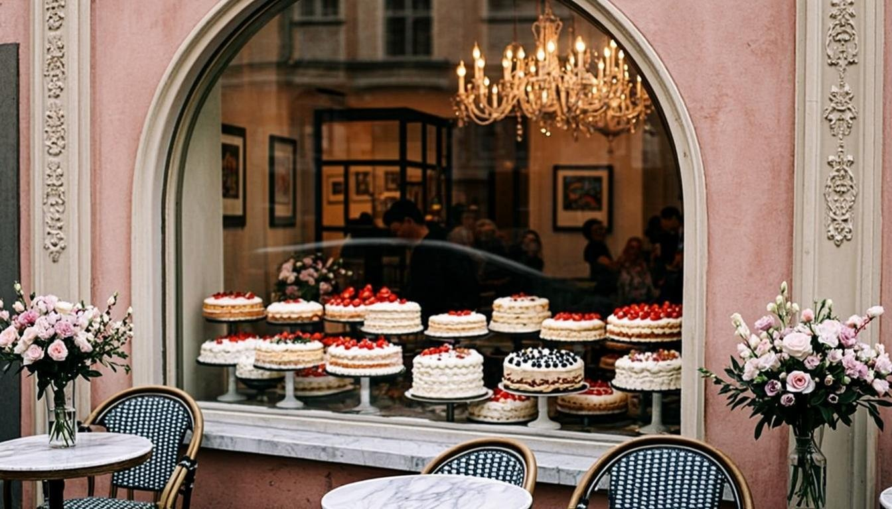

Our Story
A home kitchen, a stubborn belief in real butter, and a neighborhood that kept coming back — this is how Butter & Bloom grew from a weekend hobby into your artisan bakery.

From a home kitchen,
one loaf at a time
Butter & Bloom began in a home kitchen barely wide enough for two sheet pans. Our founder baked on weekends for neighbors, selling loaves from a wagon window and writing every order on the back of a receipt. The sourdough sold out by ten; the birthday cakes by noon.
When the queue outgrew the doorstep, we found a little storefront with good light and better ovens. We kept the recipes exactly as they were — folded, laminated and piped by hand, with real butter and patience. Nothing about that first kitchen has changed except the size of the mixing bowls.
Today we are a neighborhood favorite: the stop before Sunday brunch, the counter where your usual is already boxed, and the bakery half the town trusts with its wedding cakes. We still bake in small batches through the day, so whatever you take home was in the oven that morning.
What goes into every bake
Three habits we refuse to give up

Slow fermentation
Our doughs rest overnight, cold and unhurried. It takes longer, but the flavor is deeper and every crumb is easier to love.

Hand-laminated
Croissants are rolled and folded by hand, layer by buttery layer. No machines pressed flat, no shortcuts taken — you can taste the difference.

Decorated by hand
Buttercream petals are piped one flower at a time. Even our simplest celebration cake carries hours of quiet, careful work.
Only the good stuff
A great bake needs so few things that every one of them matters. We read the labels so you never have to.
- Real butter in every bake — never margarine, never "spread"
- Local dairy and free-range eggs from farms we can name
- Fresh fruit in season — no flavored syrups pretending to be berries
- Small batches baked through the day, so nothing sits overnight
- No premixes, no shortcuts and no artificial colors — ever


Taste the difference today
The display case fills up all morning and the kettle is always on. Order ahead for pickup, or dream something up with our custom cake team.